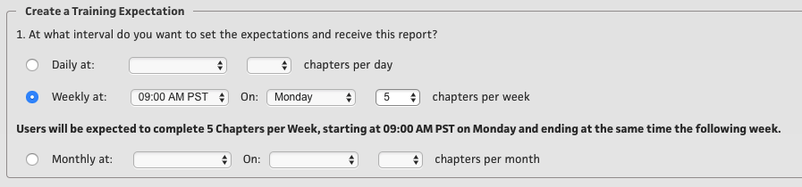

Overview
Watchdogs are a series of optional reports that, once enabled for the “System”, can be configured by “Locations” individually, as desired. The premise is that we can place a “Watchdog” on a certain activity, or report trigger, and they will “bark” at you upon the event happening, or at the frequency you set for each Watchdog.
Watchdogs can be renamed to something of your preference, for example, the “Expectation Report” could be renamed the “ACME Training Goals Report.”
A Watchdog “report/event” can be turned on at the System level, which will enable it for all of the Locations within that System. When Watchdogs are enabled for a System, each location will have a “Watchdog” button in the Quick Links. (Note: Quick Links are available for the Access Levels of Manager and above).
Each Watchdog “report/event” has certain settings that can be configured by location and each will have different characteristics and configurations, depending on what it is monitoring.
When you click “Watchdogs” from the Quick Links, each report/event will have its own separate tab, as well as “View Report” and “Settings” tabs.
The View Report tab will show you the actual report/event, and tell you some information about it. The Settings tab will let you configure it to your liking.
Training Expectations Watchdog
The Expectation Report is a Watchdog that allows you to determine an “expectation” of training chapters that users at a location need to do, within a pre-determined period of time.
You can select "Standard Training" or "Incentive Based Training" for this report.
Standard Training
For Standard Training, you first choose between 1 to 100 chapters and then set an expected time for the user to complete those chapters. On the Main Menu, we provide a visualization of their progress, so each time they visit the main menu they can quickly see how many chapters they've completed toward their daily, weekly, or monthly goal.
Incentive Based Training
For Incentive Based Training, we recommend using this feature to set a commission for the assigned number of expected chapters completed. The flexibility with the Incentive based option allows you to set a base and maximum commission goal.
For example: Users can increase their potential earnings by completing assigned training during a selected time period. Your base and max percentages can be any number, but for an example scenario: Say that employees start with a base commission of 10% and by training, they may earn up to the maximum set goal of 20% during the specified time period.
If it is an option, you may also allow users to earn any percentage in between the base and the max, if you make it a requirement that they do not have to complete ALL of the expected chapters by the end of the time period.
This can be a great way to see how motivated your users are.
Display on Main Menu?
This is a new feature so we have made this optional, but we encourage you to use it. By activating this, you can encourage users to achieve their goals by displaying their progress on the main menu. The Progress Widget will replace the "My Sign Ins" Widget on the Main Menu, and it is updated in real time.
Create a Training Expectation - Standard Expectation
We'll now walk through how to configure this for the first time. The first question is:
- At what interval do you want to set the expectations and receive this report?

You can set this expectation to run Daily (at a certain time), Weekly (at a certain time, on a certain day) or Monthly (at a certain time, and on either the 1st, 15th, or last day of the calendar month). You also will select a number of training chapters that are expected to be done within that desired time period.
You may skip to the next section if you are only using a "Standard" expectation.
Incentive Based
After setting the interval (above) - now we have two additional questions that were not included under the Standard setting - they are:
- Do the users need to complete ALL expected chapters in order to receive the incentive?
If set to Yes, the percentage on the report and hte main meu widget will remain at the base percent until the user reaches the expectation goal.
If set to No, the percentage will show a progressive increase from the base to the maximum until the user reaches the expectation goal.
- How is this training incentive measured?
For this next question, this will be how we are going to measure their commission. Set the base (or minimum) percentage to start the user out on, and then set a maximum that the user can earn by completing the expected training. (Note: this supports up to 2 decimal points)
Who should receive this report?
Each location can designate as many different people as they want to receive the reports, as well as the option to receive only the information on the team they've selected. This Watchdog can send you an email, which will be the full report pushed out to your email. Or it can also send you a SMS Text Message that will consist of the summary of the report. (Note: You do not have to be a user at this location to receive the report.)
Training Incentive Report - Use Cases
Example 1:
Say you would like to encourage your users to do their training by offering them up to a 5% bonus each month.
You can use the Training Incentive Tool to achieve that by configuring it the following way:
Set the expectation to Monthly and choose 20 chapters. Next, set the base % to 0, and the Maximum to 5. My users must complete all 20 chapters in order to receive the bonus, so for question 2 I will set this to 'yes'. You and your users will be able to track their progress as the month goes by, but the percentage will never show the full 5% UNTIL all 20 chapters have been completed.
Example 2:
Let's say you earn a 10% commission on every sale that you make, a sum which is paid out monthly. Now your boss says that you need to train more! From now on, you will only earn a 5% commission unless you login to LightSpeed and complete your training each month. I can do as little or as much training as I want, but I'll be paid based on the amount I complete.
We can set that up this way: Set the interval to Monthly, at 5 pm, on the last day of the month, and 40 chapters.
Do users need to Complete All Training? We will set that to "No".
And how is this incentive measurered? Well I will already receive a 5% if I do absolutely nothing, so I will set that as the Base. But since by completing the chapters I can earn up to a maximum of 10%, I'll set the maximum to 10.
Now the Incentive is complete, I can monitor the progress of my location at any time by visiting the Watchdog, or even emailing it to myself by entering in a custom date range on the main report screen.
That's it for the Training Expectations Watchdog, now we'll move on to the Progress Report.
The Progress Report Watchdog
This report is pretty straight foward: This is a location report that shows usage data, so you can see how much or how little the users at your location are doing.
NOTE: If you would like to hide a user on this report, set the user to “Training Center Reports = Hide” on their User Profile.
The User Tracker Watchdog
The User Tracker is a fairly straight forward Watchdog report that allows you to track Created Users and De-Activated Users.
Certification Watchdog
The Certification Watchdog report allows you to receive a snapshot of user progress through any certification you currently have setup in your system. Choose as many or as little Certifications as you like. Every 5 Certifications you select will be sent in 1 email. So if you have 12 total Certifications, you would receive 3 total emails: 5 in the first, 5 in the second, and 2 in the third.